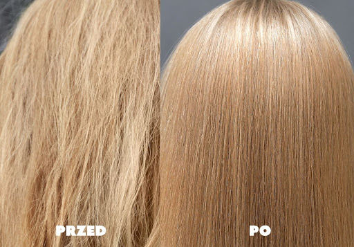

Olejowanie - jak dobrać olej?
Olejowanie można przedstawić metaforycznie jak dbanie o buty lub drewniane meble: włosy
są martwą tkanką, ale potrzebują konserwacji, zabezpieczania. Włosy na długości nie mają
możliwości regeneracji, pogrubienia się czy wzrostu. Wyrastają ze skóry głowy, z cebulek
włosowych. Dlatego tak ważna jest “konserwacja” na długości.
Włosy niskoporowate
- Olej kokosowy
- Masło shea
- Masło kakowe
- Masło mango
- Masło babassu
Włosy średnioporowate
- Oliwa z oliwek
- Olej z awokado
- Olej słonecznikowy
- Olej macadamia
- Olej z orzeszków ziemnych
- Olej sezamowy
- Olej ze słodkich migdałów
- Olej ryżowy
Włosy wysokoporowate
- Olej z nasion chia
- Olej kukurydziany
- Olej z ogórecznika
- Olej sojowy
- Olej z nasion bawełny
- Olej z nasion maku
- Olej z pestek dyni
- Olej z czarnuszki
Metody olejowania
Olejowanie na sucho
Olejowanie na sucho polega na nałożeniu na włosy oleju, rozprowadzonego wcześniej na
dłoniach. Ważne jest, żeby rozważnie gospodarować ilością nakładanego oleju – przesada
nie jest tutaj dobra!
Najlepiej nakładać olej na małe partie włosów, najpierw rozcierając niewielką ilość na
dłoniach tak, jakbyście chciały wetrzeć go jak krem do rąk.
Olejowanie mgiełką
Przy olejowaniu mgiełką należy zmieszać olej (około 1 łyżki stołowej) i wodę lub hydrolat w
spryskiwaczu. Do takiej mikstury można dodać składniki dodatkowe: panthenol, glicerynę,
aloes.
Olejowanie w misce tzw. “rosół”
Olejowanie w misce polega na dodaniu oleju do miski z wodą, a następnie zanurzenia
włosów w owej miksturze. Olej osiądzie na włosach, a woda po prostu wyręczy Was w jego
aplikacji.
